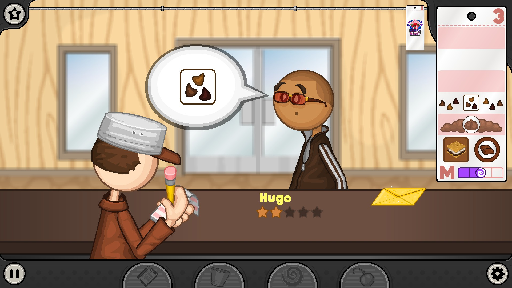
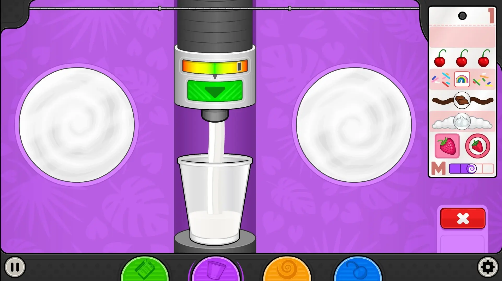

Welcome to Papas Freezeria's Fandomwikirules
I am Ellie! And this is the ins and outs of Papas Freezeria!
Papas Freezeria is a complicated game, here are some tips:
- Always stay calm
- If you are frantic, the results will be not as good
- Practicing is the best way to remember! Practice at Papas Freezeria!
- Remember your training
- You trained for a reason!
- Remembering you training can make your custosomers portay you as more professional
- You ARE good enough
- Don't put doubt into your head
- Fear is your worst enemy
Papas Freezeria Home page!
This is what your starting page should look like:

Papas freezeria stations
Make sure you are familiar with the stations

